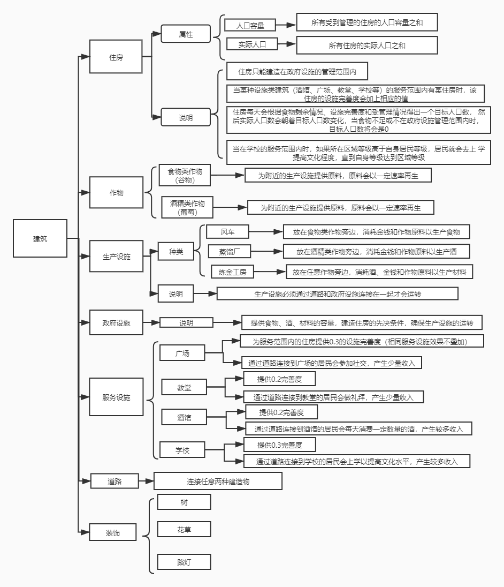
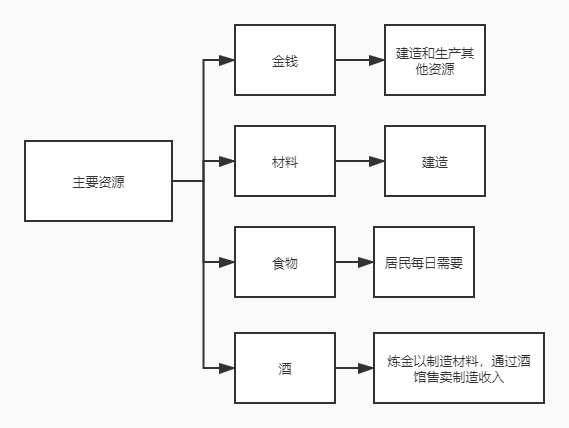

01 / FOUNDATION
设置首个建筑：仓库
以政府设施仓库作为聚落起点，建立后续建设和物资流转的中心。
EARLY ARCHIVE · UNITY / CITY BUILDER
受《纪元 1701》启发的城市建设 Demo：从一座仓库开始，通过生产、道路与公共服务建立持续扩张的聚落。
HISTORICAL LEARNING PROJECT
PLAYTHROUGH
以政府设施仓库作为聚落起点，建立后续建设和物资流转的中心。
在适合的土地单元中设置农田，为聚落建立第一类基础产出。
补充加工环节，让原始农作物进入可供城市使用的生产链。
连接生产设施与仓库后激活建筑，开始消耗原料、生产资源并播放工作动画。
增加城市人口容量，让生产系统进一步转向居民生活与公共服务。
公共设施通过服务范围影响附近住宅，使居民满足度成为城市发展的条件。
区域人口达到条件后，仓库、学校等公共建筑自动进入更高等级。
住宅与学校连通后教育水平逐步提升，并在达标后触发住宅升级。
随着服务种类和居民满足度提升，城市外观与功能层级继续演化。
从已建设区域向外探索岛屿，为新的生产设施与居民区释放空间。
由单一聚落走向更广阔的海域，为这一阶段的城市建设流程收尾。
ORIGIN
《新大陆》源于我对城市建设游戏《纪元 1701》的喜爱。玩家从荒地开始建设仓库、居民房、学校、广场与生产设施，在扩张城市的同时满足居民的生存、教育和社交需求。
这个 Demo 关注的不是地图堆砌，而是系统之间的连接：建筑只有在道路、资源和服务关系成立后才会运作；人口规模或居民满足度达到条件后，公共设施和住宅会自动升级并获得更精致的外观。
GAME SYSTEMS
陆地由方形单元构成；建筑预览会标识占地、可放置区域、功能范围和可调整朝向。
生产设施需连接原料与仓库，住宅需连接学校、广场等服务设施，系统才会生效。
人口、教育和居民满足度达到条件后，公共建筑与住宅自动升级，推动城市继续发展。
SYSTEM REFERENCES
记录住宅、公共服务与生产建筑的作用，以及它们在不同城市阶段中的变化。

展示城市使用的资源以及生产设施之间的基础依赖关系。
